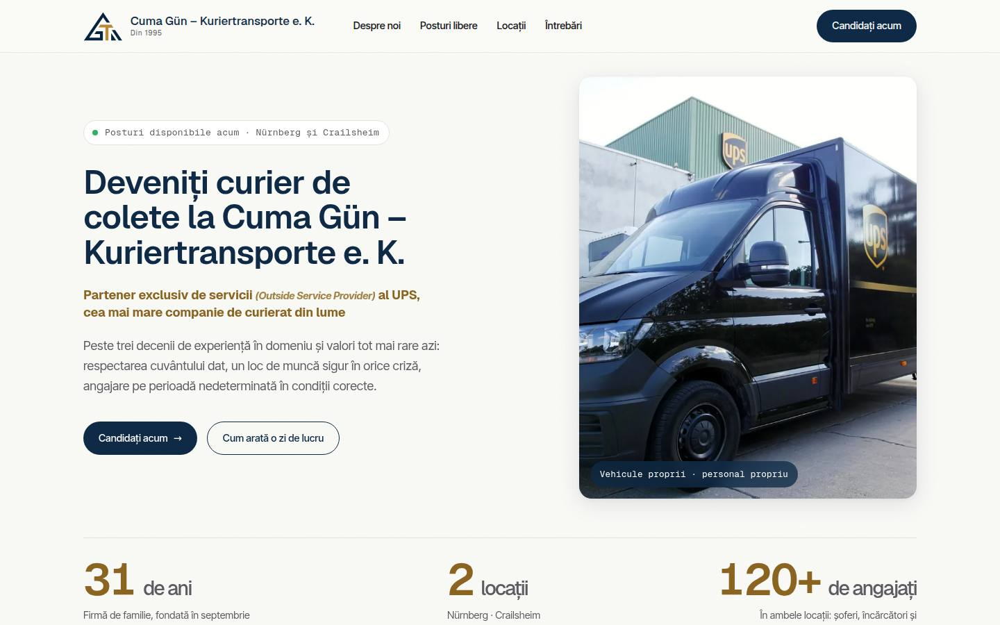
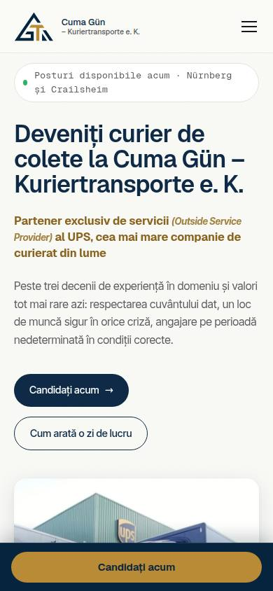

predat Proiect pentru client
Cuma Gün – Kuriertransporte e. K.
Posturi deschise în două locații → fiecare candidatură ajunge singură în căsuța potrivită.
180+ verificări automate înainte de predare
Traducere pentru prezentare — site-ul clientului este în germană.
Cum a fost făcut
Site de cariere pentru o firmă de curierat din Nürnberg și Crailsheim
- SarcinaPosturi libere în două locații, Nürnberg și Crailsheim.
- RealizatPagină de cariere și formular de candidatură cu atașamente.
- RezultatFiecare candidatură ajunge singură în căsuța de e-mail a locației potrivite.
- 2locații: Nürnberg și Crailsheim
- 1 formularcandidatura cu fișiere ajunge direct pe e-mailul locației potrivite
- 180+verificări automate înainte de predare
Predat clientului pe 07.10.2026 · lansare pe guen-transporte.de
Ce se poate adăuga
- Pot construi programarea online a interviurilor
- Pot construi un bot care răspunde la întrebările obișnuite ale candidaților
- Pot construi o listă automată a tuturor candidaturilor


